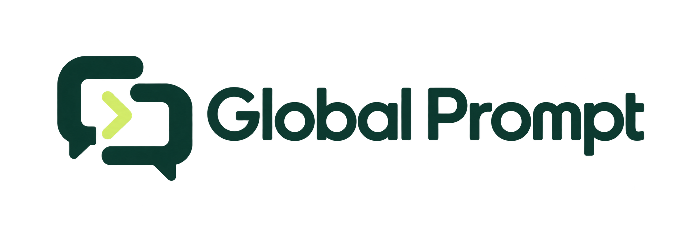

Житель пишет
Описывает вопрос в WhatsApp. При необходимости прикладывает фотографию, без установки отдельного приложения.

ДЛЯ ЖИТЕЛЕЙ. ДЛЯ ОСИ. ДЛЯ ДОМА.
Жители пишут в WhatsApp.
ОСИ управляет обращениями в одном месте.
Каждая заявка получает понятный статус.
Готовим пилот вместе с ОСИ
Пример диалога: от обращения до решения.
ПОНЯТНЫЙ ПРОЦЕСС
От первого сообщения до ответа сотрудника: переписка, заявка и статус связаны между собой.
Описывает вопрос в WhatsApp. При необходимости прикладывает фотографию, без установки отдельного приложения.
После подтверждения регистрации обращение попадает в нужное ОСИ. Сотрудник назначает ответственного и обновляет статус.
Ответы и изменения статуса приходят в WhatsApp. Житель может уточнить детали или вернуться к предыдущему обращению.
РАБОЧЕЕ ПРОСТРАНСТВО ОСИ
Все, что нужно сотруднику для работы с обращениями, в одной веб-панели.
Обсудить задачи вашего ОСИСписок заявок, фильтры и ответственные помогают понять, что уже в работе, а что требует внимания.
Сообщения, фотографии и история статусов остаются внутри обращения.
ОСИ подтверждает регистрацию жителей. Житель получает информацию только о своих обращениях.
AI помогает определить категорию и подготовить краткое описание. Решения остаются за сотрудником.
ПЕРЕД ЗНАКОМСТВОМ
Нет. Основной канал общения для жителей: WhatsApp. Сотрудники ОСИ работают через веб-панель в браузере.
Житель подает заявку на регистрацию. ОСИ проверяет связь с домом и подтверждает доступ, после чего житель может отправлять обращения.
Платформа готовится к пилотному запуску. Оставьте сообщение, чтобы обсудить участие вашего ОСИ, задачи и условия пилота.
AI используется для помощи в обработке текста. Подтверждение регистрации, работа с заявками и их закрытие остаются под контролем ОСИ.
ДАВАЙТЕ ПОЗНАКОМИМСЯ
Представляете ОСИ или управляющую организацию? Расскажите, как вы работаете с обращениями и что хотели бы улучшить.
Форма предназначена для вопросов о платформе и участии в пилоте. Имя, email, организация и сообщение используются для ответа на обращение. После подключения формы данные передаются через сервис Formspree. Не указывайте персональные данные жителей. До запуска приема сообщений владелец сайта должен указать свои реквизиты, контакт для вопросов об обработке данных и условия хранения.